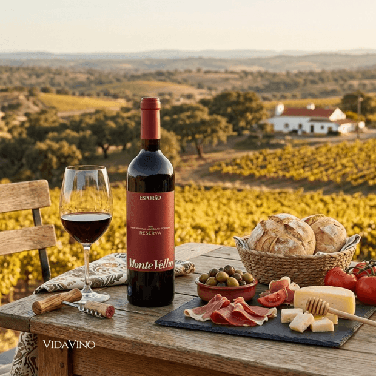

Você sabe a diferença clara entre o vinho tinto e o vinho branco (exceto pelas diferenças óbvias de cor)? Vinho tinto e vinho branco são diferentes desde o início quando estão na videira. As diferenças continuam no processo de vinificação e, como você pode imaginar, também nos perfis de sabor.
Conhecer as principais diferenças entre vinho tinto e vinho branco ajudará você a tomar decisões informadas sobre harmonização de vinho e comida, armazenamento de vinho e consumo de vinho para benefícios à saúde. Por isso, vamos aprender um pouco mais sobre vinho tinto!

1. Ingredientes e Componentes Principais
Uvas tintas: Variedades como Cabernet Sauvignon, Merlot, Malbec, Syrah ou Pinot Noir dão origem à bebida. A polpa da uva é clara, os pigmentos que dão a cor vermelha e os taninos (que dão estrutura e aquela sensação de secura na boca) vêm justamente da casca.
Leveduras: Microorganismos (fungos) presentes naturalmente na casca da uva ou adicionados pelo enólogo. Elas consomem o açúcar do suco e o transformam em álcool e gás carbônico.
Compostos naturais: Em média, o vinho tinto é composto por cerca de 86% de água, 12% de álcool, além de ácidos orgânicos, glicerol, sais minerais e antocianinas (responsáveis pela cor).
2. Como é o Processo (Etapas)
Colheita e Esmagamento: As uvas são colhidas, os engaços (talos) são retirados e as frutas são esmagadas levemente para liberar o suco e formar o mosto junto com as cascas.
Fermentação e Maceração: O suco descansa junto às cascas. As leveduras realizam a fermentação alcoólica, convertendo o açúcar em álcool, enquanto o contato prolongado com as cascas extrai a cor e os taninos.
Maturação e Engarrafamento: O líquido é separado das partes sólidas, podendo descansar em tanques de inox ou barricas de madeira para ganhar complexidade, antes de ser filtrado e engarrafado.
3. Vinho Tinto vs Vinho Branco Álcool
De um modo geral, as uvas para vinho branco são colhidas mais cedo do que as uvas para vinho tinto para preservar seus níveis de acidez. Portanto, as uvas usadas para fazer vinho tinto são mais maduras e contêm mais açúcar do que as uvas usadas para fazer vinho branco. Quanto maior o teor de açúcar das uvas na colheita, maior o potencial alcoólico de um vinho.
Assim, de um modo geral, o vinho tinto contém mais teor alcoólico do que o vinho branco. Isso significa que você pode beber mais vinho branco antes de ficar bêbado do que se bebesse vinho tinto!
O vinho tinto médio tem 3,1 gramas de teor alcoólico por copo, e o vinho branco tem 2,9 gramas por copo. Todas as garrafas de vinho são legalmente obrigadas a indicar o teor alcoólico ou ABV, álcool por volume. As vinícolas recebem um pouco de espaço de manobra, portanto, pode ser até meia porcentagem a mais do que o declarado.